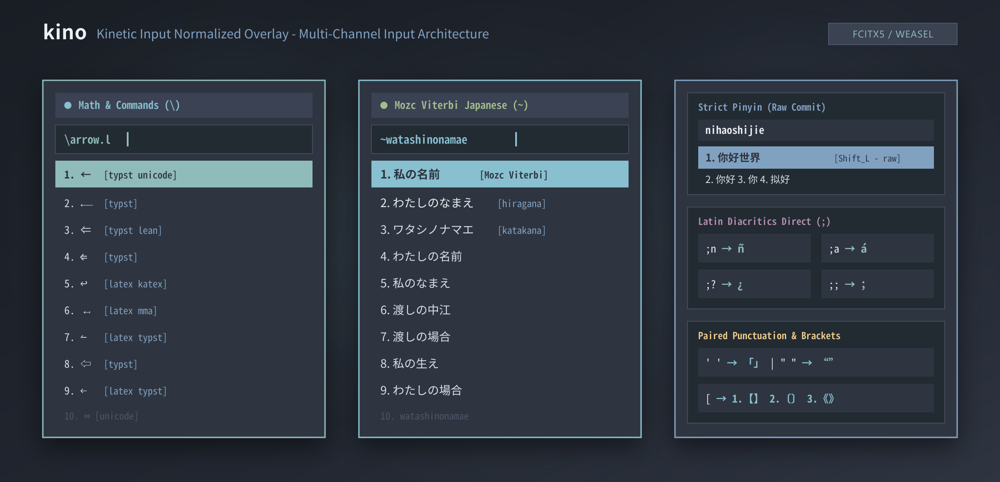

多平台支持
Multi-platform
基于 Rime，适配 Linux（Fcitx5）、Windows（小狼毫）与 macOS（鼠须管）。一条 deploy.sh / deploy.ps1 完成叠层部署。
Rime overlay for Linux (Fcitx5), Windows (Weasel), and macOS (Squirrel). One deploy script installs the stack.
kino
多通道 Rime 叠层，一次部署三个平台
A multi-channel Rime overlay for three platforms
叠在薄荷拼音之上：严格拼音热路径、数学检索、拉丁重音、Mozc Viterbi 日文。
On top of Mint Pinyin: strict pinyin, math search, Latin diacritics, Mozc Viterbi Japanese.

基于 Rime，适配 Linux（Fcitx5）、Windows（小狼毫）与 macOS（鼠须管）。一条 deploy.sh / deploy.ps1 完成叠层部署。
Rime overlay for Linux (Fcitx5), Windows (Weasel), and macOS (Squirrel). One deploy script installs the stack.
反斜杠数学与命令（LaTeX / Typst / Lean / MMA），分号拉丁重音，波浪号日文 Viterbi；拼音热路径保持严格、低干扰。
Backslash math (LaTeX / Typst / Lean / MMA), semicolon Latin diacritics, tilde Japanese Viterbi; strict low-noise pinyin.
以 oh-my-rime 为底座，kino 只提供 overlay、主题与 Lua 通道。词库与主方案 ID 保持兼容。
Built on oh-my-rime. kino ships overlay, theme, and Lua channels only. Schema ID and dictionaries stay compatible.
源码在 GitHub 以 GPL-3.0 发布。
Released on GitHub under GPL-3.0.
git clone --recurse-submodules https://github.com/Epistemelody/rime-kino.git cd rime-kino ./scripts/deploy.sh # Windows: .\scripts\deploy.ps1